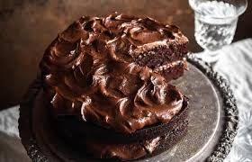

Torta De chocolate

La reina indiscutible de las meriendas. Esta receta te garantiza un bizcocho de chocolate extremadamente húmedo, suave y con un sabor intenso, cubierto por una capa generosa de fudge o ganache de chocolate brillante.

La reina indiscutible de las meriendas. Esta receta te garantiza un bizcocho de chocolate extremadamente húmedo, suave y con un sabor intenso, cubierto por una capa generosa de fudge o ganache de chocolate brillante.